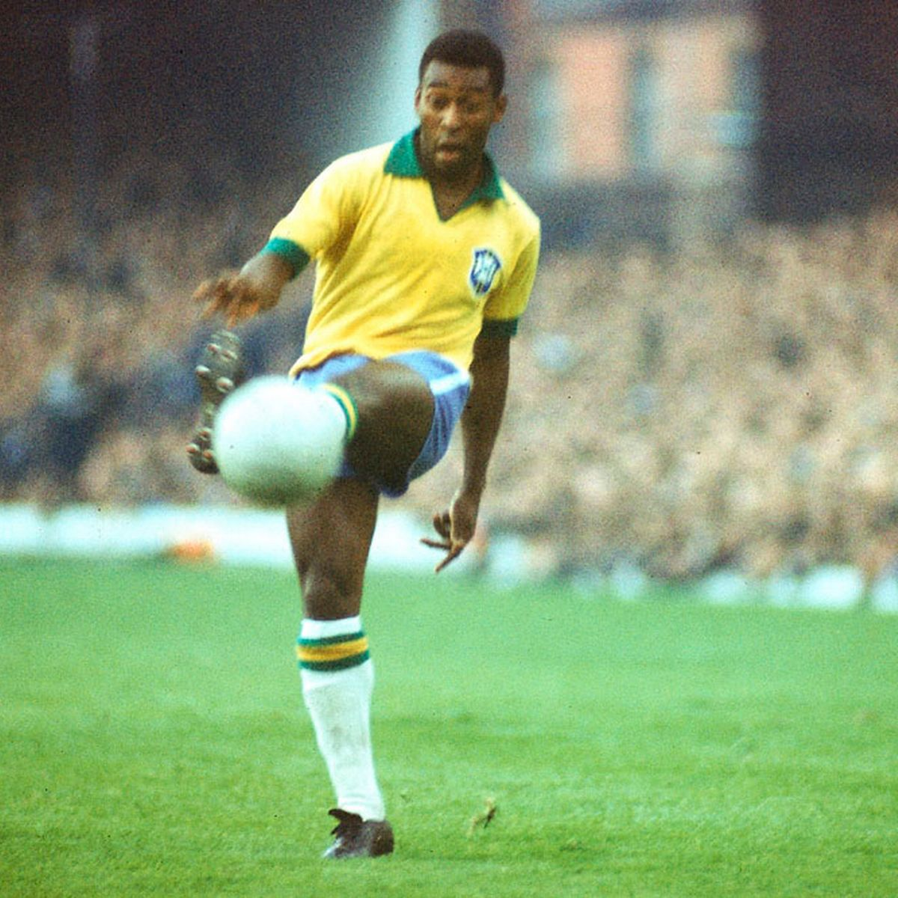
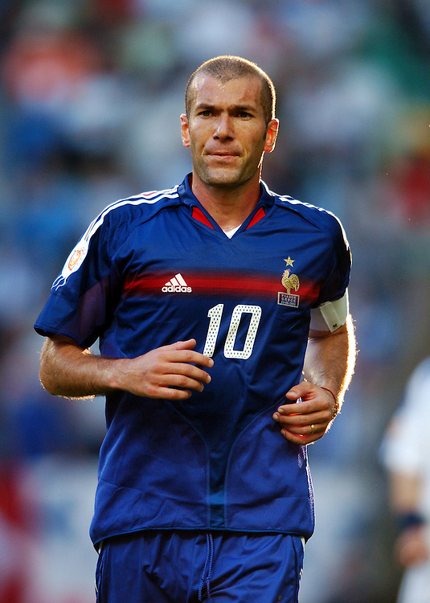

About
About Us
Created and run by one man, Nicolas Ruth, with a passion for football! My aim is to keep you up to date with everything you want to know in relation to the game we all love.
The History of Football
More than 240 million people around the world play soccer regularly according to the Federation
Internationale de Football Association (FIFA). The game has evolved from the sport of kicking a
rudimentary animal-hide ball around into the World Cup sport it is today. Records trace the history of
soccer back more than 2,000 years ago to ancient China. Greece, Rome, and parts of Central America also
claim to have started the sport; but it was England that transitioned soccer, or what the British and
many other people around the world call "football," into the game we know today. The English are
credited with recording the first uniform rules for the sport, including forbidding tripping opponents
and touching the ball with hands.
As the sport developed, more rules were implemented and more historical landmarks were set. For
example, the penalty kick was introduced in 1891. Red and yellow cards were introduced during the 1970
World Cup finals. More recent major changes include goalkeepers being banned from handling deliberate
back passes in 1992 and tackles from behind becoming red-card penalties in 1998. Some of the top players
throughout history include Pele (Edson Arantes Do Nascimento) from Brazil, who scored six goals in the
1958 World Cup and helped Brazil claim its first title; Lev Yashin from Russia, who claimed to have
saved more than 150 penalty shots during his outstanding goal-tending career; and Marco Van Basten from
Holland, who won several very prestigious soccer awards during one year alone. There are many debates
over who the greatest soccer players are of all time; but players like Zinedine Zidane, Diego Maradona,
Michel Platini, Lionel Messi, and Roberto Baggio make almost every list.

